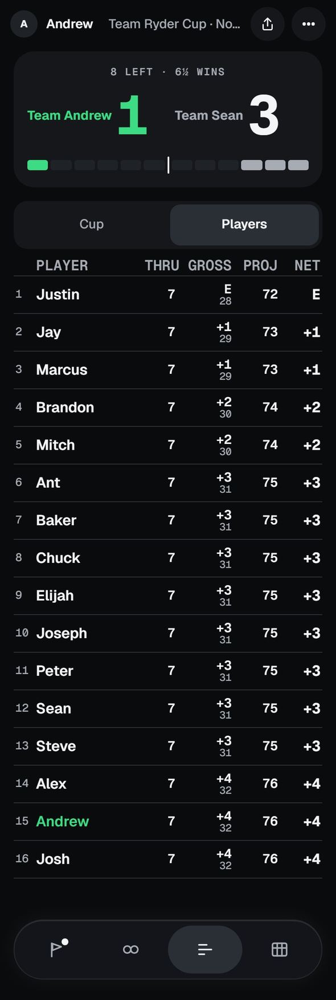

Every game's Matches and Board, photographed side by side from the live app, then redrawn with Team Ryder Cup's parts. Team Ryder Cup is the north star: where another game looks different only because it was built earlier, it should take Team Ryder Cup's screen.
Same practice data for every game, mid-round, dark mode, iPhone 15/16 width, full length (each strip scrolls sideways; tap a phone to see it big). Team Ryder Cup is outlined in green: that's the template.
Each part of the two screens, game by game. A check means it already matches Team Ryder Cup. Amber means it's a different design for the same job.
| Part | Team Ryder Cup | Rider Cup · 8 and 6 | 2v2 | Match play · split point | Scorecard only |
|---|---|---|---|---|---|
| Matches tab | Match screen: “vs Josh + Brandon”, rotation switch, match card, hole strip, the hole's scores | Same screen (cart names in cart colors) | Its own older screen: big “0 – 4”, an 18-square bar, a hole-by-hole table | The race keep already green-for-you only | A paragraph: “No game on this round” + Turn on Match play |
| Board · top | Cup card: both sides, big numbers, points bar | No top card: the list starts straight away | Leader header: name + big number + “up 8 on you” | Leader header, leader's name in their jersey color | Leader header in strokes |
| Board · switch | Cup / Players | Teams / Players | Points / Strokes | Teams / Players | None |
| Board · the list | Rotation strips: two pairs a row, a pill on the side that's up | Ranked carts: jersey-colored numbers and bars, your row boxed in green; then rotation strips | Ranked players: blue bars, your row boxed | Ranked players: name, number and bar each in a different jersey color | The old gross table |
| Headline card | None on the Board | Border in the hero's color | Blue border | None | None |
| Board · Players | New table: Thru · Gross · Proj · Net, you in green | Same table | Old table: Gross · Player · Thru · Tot | Old table + jersey dots; every name printed twice | Old table (it's the whole Board) |
| Tap a row | Match sheet | Match sheet | Player scorecard sheet | Points-by-hole list sheet | Player scorecard sheet |
| Final | Trophy card: winner, “wins the cup”, score, bar, clinch line, Round recap + Share | The list first, then a winner card with a cart-colored border, then Season standings | Leader header, then a blue winner card that names a different winner | Leader header, then a jersey-colored winner card: winner shown twice | Leader header, then a plain winner card |
| Color | You green, everyone else white / grey | A jersey color per cart | Blue for the other pair | A jersey color per player (A–F) | Green for you only |
| Numbers | ½ | ½ | ½ | ½, ⅓, ⅔ and 1.83, 2.17 in the same list | Strokes |
Matches is mostly fixed already: the cup games share Team Ryder Cup's screen and the race is a keeper, so only 2v2 and Scorecard are left. The Board is where the app falls apart: four different tops, four switch labels, two Players tables, three sheets, two final cards and three color rules.
Small, live today, and fixable on their own before any redesign.
js/screens/board.js:149js/screens/board.js:240js/screens/board.js:246Setup starts from how many are playing, then shows only the games that fit. A foursome is the round you play most, so it comes first.
Today there are five games, and some of them overlap. Match play is really split point. 2v2 and Partner “Rider” Cup are the same game (you and your cart partner against another cart), just for 4 or for 8. Underneath, there are only three ways to play. How you score a hole is a setting, not a separate game.
A point a hole. The low net score takes the hole, and a tie for low splits it. 1v1v1v1. This is today's split point.
Match play. Your cart against theirs. Win the hole and you go 1 up; a tie pushes. You pick how a hole is scored: best ball, best ball + total, or scramble.
Just the scorecard. The lowest total wins. This is today's Scorecard only.
Low net ball wins the hole and puts you 1 up. Ties push. Once you're up more holes than are left, it's over (3 & 2).
| Players | Stroke play | Everyone alone | 2v2 with your partner | Two sides | Today's games |
|---|---|---|---|---|---|
| 1 | Yes | — | — | — | Scorecard only |
| 2 | Yes | 1v1 match play. With two players, a point a hole is plain match play, so it shows “2 UP”, not points. | — | — | Scorecard, Match play |
| 3 | Yes | A point a hole | — | — | Scorecard, Match play |
| 4 | Yes | A point a hole | Your cart against theirs | — | Scorecard, Match play, 2v2 |
| 5 | Yes | A point a hole | — | — | Scorecard, Match play |
| 6 | Yes | A point a hole | 3 carts: every cart plays the other two at once | — | Scorecard, Match play, Rider Cup for 6 |
| 7 | Yes | Question 2 | — | — | Scorecard only |
| 8 | Yes | Question 2 | In every foursome. Opponents: the same all day, or rotate | — | Scorecard, Rider Cup |
| 9–15 | Yes | — | — | — | Scorecard only |
| 16 | Yes | — | — | Team Ryder Cup, as is | Scorecard, Team Ryder Cup |
Old rounds keep working: the game ids stored with each round stay the same. What changes is Setup, the names, and the three new scoring options.
Only two kinds of score bug are left. Head to head (2v2, 1v1, two sides) gets left against right. A field (everyone alone, stroke play, 4 or more carts on one Board) gets the short leaderboard from section 5.
Each tab answers one question. Matches: how are we doing against the people we're playing right now? Board: how are we doing against everyone, and how's that other team doing?
Golfers already know two score bugs from TV. Ryder Cup coverage shows one total per side, left against right. Tour coverage shows a short leaderboard: position, name, score, thru. Team Ryder Cup already uses the first one. Every other Board has 3 to 6 teams or players, so it gets the second one, plus one line that tells you how far you are from 1st. The standings and Players views underneath are left for the next round.
Dropped Nov 18: the dot track. Golfers have never seen a scoreboard like it, so you had to work out what it meant before you could read it.
Nov 18: carts are shown by their two players (“Mike + Tyler”), not cart names.
The same moment both ways: Rider Cup with 8 players, thru 9. Mike + Tyler 14, Chris + Matt 9, you and Sean 8, Sam + Jake 7.
Team Ryder Cup keeps its cup card. Every other Board uses the short leaderboard, with the columns and the bottom line written for its game. Colors: you're green and everyone else is white. No jersey colors. On the full Board, games where every player is their own team use the shorter version (see “On the full Board”).
Yes: a bug on top of a bigger scoreboard. Team Ryder Cup already works that way today (the cup card on top, Cup / Players under it). The rule that stops it from showing the same list twice: the bug shows the game's standings, and the table under it shows the players. In team games those are different lists. In games where every player is their own team, the table already ranks everyone, so the bug shrinks to the leader, you, and what you need.

| Player1 | Thru | Gross | Proj | Net | |
|---|---|---|---|---|---|
| 1 | Mike | 10 | +238 | 76 | −3 |
| 2 | Andrew | 9 | +339 | 78 | −1 |
| 3 | Tyler | 10 | +440 | 79 | E |
| 4 | Chris | 9 | +541 | 82 | +1 |
| 5 | Sean | 9 | +642 | 84 | +2 |
| 6 | Jake | 10 | +743 | 84 | +2 |
| Player2 | Pts | Thru | Gross | Net | |
|---|---|---|---|---|---|
| 1 | Chris | 4.3 | 14 | +458 | E |
| 2 | Andrew | 3.3 | 14 | +660 | −1 |
| 3 | Jake | 2.5 | 14 | +761 | +1 |
| 4 | Sam | 2.0 | 14 | +862 | +2 |
| 5 | Sean | 1.8 | 14 | +963 | +2 |
| Player | Thru | Gross | Proj | Net | |
|---|---|---|---|---|---|
| 1 | Sam | 5 | +121 | 73 | −2 |
| 2 | Jake | 5 | +222 | 74 | −1 |
| T3 | Andrew | 5 | +323 | 75 | E |
| T3 | Sean | 5 | +323 | 75 | +1 |
| Game | Bug | Switch | Under the switch |
|---|---|---|---|
| Team Ryder Cup live today | Cup card (2 sides) | Cup · Players | Rotation strips / Players table |
| Rider Cup · 8 and 6 | Leaderboard of carts | Live matches · Players | Rotation strips / Players table |
| 2v2 | Leader and you (players) | Live matches · Players | Pairing strips / Players table with Pts |
| Match play · split point | Leader and you | none | Players table with Pts |
| Scorecard only | Leader and you, to par | none | Players table |
Matches is always you against the people you're playing right now, which is exactly what the Ryder Cup TV bug shows. The cup games and 2v2 already use Team Ryder Cup's match card. Match play and Split point keep the race, because there everyone is your opponent on every hole.
One Board for every game: a top card, one switch (Standings / Players), one list, the same Players table, the same sheets, the same final card. Green is you; everyone else is white or grey. The game only changes the words and numbers.
Drawn in the page with the app's tokens, at 72%. Numbered pins match the notes under each phone. Only two pieces are new and need the designer: the leader card (the cup card for games without two sides) and the player sheet. Everything else already exists in Team Ryder Cup.
Nov 18 update: the left/right leader card on these phones is replaced by the leaderboard bug in section 5 (Score bug). The parts underneath it come next.
1 point a hole · a tie splits it
| Player2 | Thru | Gross | Proj | |
|---|---|---|---|---|
| 1 | Sam | 5 | +121 | 73 |
| 2 | Jake | 5 | +222 | 74 |
| T3 | Andrew | 5 | +323 | 75 |
| T3 | Sean | 5 | +323 | 75 |
| Game | Leader card · kicker | Leader card · left / right | Final · winner line | Final · score + line |
|---|---|---|---|---|
| Team Ryder Cup keeps the cup card | 8 left · 6½ wins | Your side / their side | Team Sean wins the cup | 4½ – 7½ · Clinched on hole 18 · MVP cart Josh + Brandon 3–0 |
| Rider Cup · 8 and 6 | Official thru 9 · 9 left | Your cart / the leading cart | Shank Redemption wins the day | 21½ – 24 · Won by 2½ · you finished 2nd |
| 2v2 | Official thru 11 · 7 left | You / the leading player | Sam & Jake share the day | 17 – 21 · Tied at 21 · you finished 3rd |
| Match play · split point | Official thru 14 · 4 left | You / the leader | Chris wins the day | 3.3 – 5.8 · 4 holes won outright · you finished 3rd |
| Scorecard only | Thru 5 · strokes | You / the low score | Sam wins the day | +7 – +6 · Low round 78 · you finished 2nd |
Brief 028's leader card mockup still used jersey colors and bars, and 027's “Grow · open” drew the other cart in its cart color. If you agree to question 1, this goes to the designer as 031 · one Board, saying it changes those two drawings. Handed-off folders aren't edited.
“Build” means it's Team Ryder Cup's existing part with the game's data, no design needed. “Design” means it waits for the designer.
| Game | Matches | Board · top + list | Players | Tap a row | Final | Color |
|---|---|---|---|---|---|---|
| Team Ryder Cup | Stays | Stays (switch says Standings) | Stays | Stays | Stays | Stays |
| Rider Cup · 8 and 6 | Build: drop cart colors | Design: leader card · Build: plain rows | Stays | Stays | Build: Team Ryder Cup's final card | Build: jerseys off |
| 2v2 | Build: Team Ryder Cup's match screen | Design: leader card · Build: player rows + pairing strips | Build: new table | Build: match sheet · Design: player sheet | Build: final card, players crowned (bug 2) | Build: blue off |
| Match play · split point | Race stays | Design: leader card · Build: plain rows, one number format | Build: new table (fixes bug 1) | Design: player sheet | Build: final card | Build: jerseys off |
| Scorecard only | Build: your tee time (028) | Design: leader card · Build: Players table as the Board | Build: new table | Design: player sheet | Build: final card | Already |